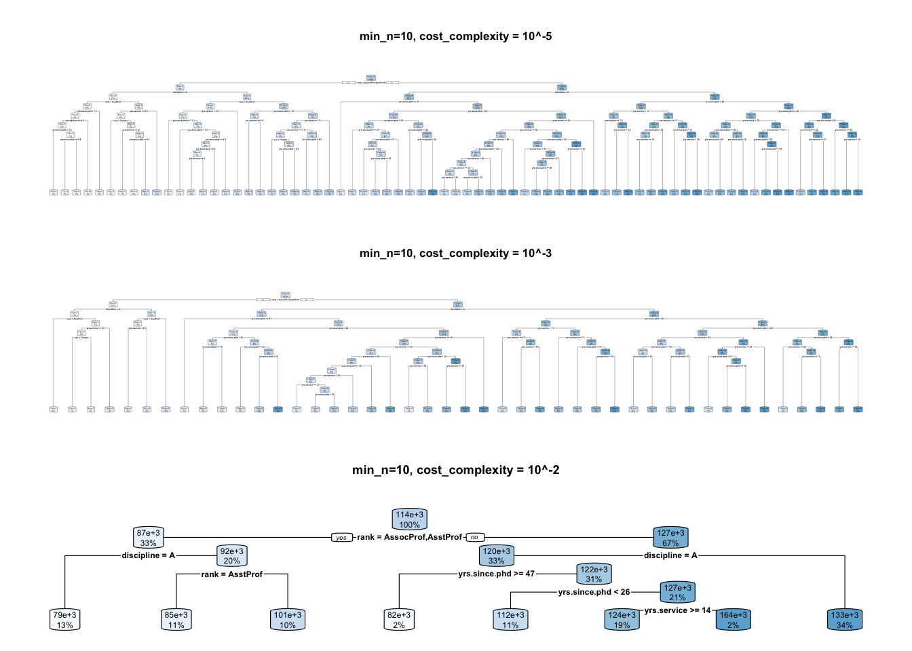
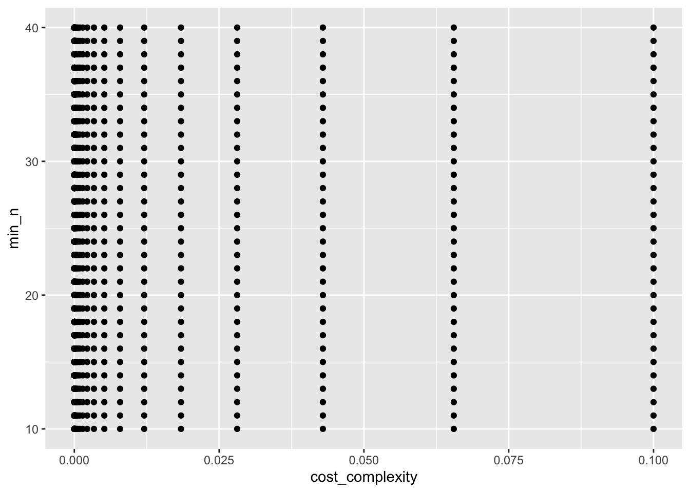
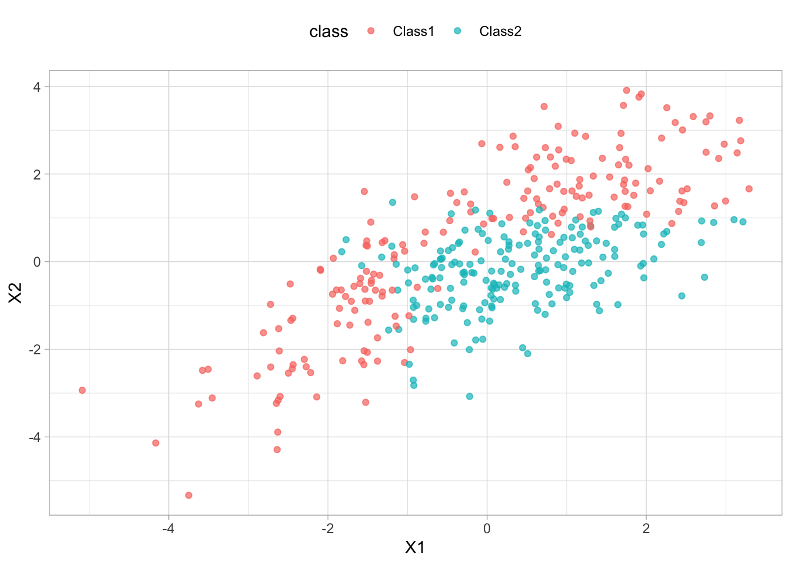
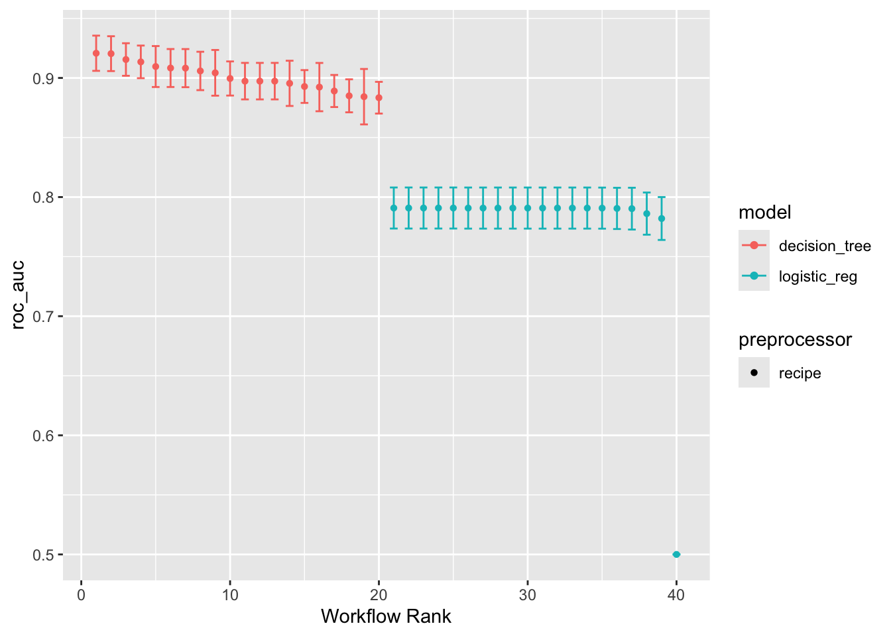

flowchart LR
A[Data] --> B((Model)) --> C[Predictions]
Week06: Single Learner
บทเรียนนี้จะกล่าวถึงอัลกอริทึมการเรียนรู้ของเครื่องประเภท single learner
อัลกอริทึมในกลุ่มนี้มีหลายตัว เช่น
Linear Regression
Logistic Regression
Decision Tree
K-Nearest Neighbors
Naive Bayes Classifiers
Support Vector Machines
1. Linear Regresssion
Linear regression is a fundamental statistical method used to model the relationship between a dependent variable and one or more independent variables. It is widely used for predictive analysis and to understand the relationship between variables.
1.1 Model
\[ y_i = \beta_0 + \beta_1 x_{1i} + \beta_2 x_{2i} + \ldots + \beta_n x_{pi} + \epsilon_{i} \]
1.2 Assumptions
Linearity:
Independence:
Homoscedasticity:
Normality:
No multicollinearity:
No Influential Outliers:
1.3 Model Interpretation
Intercept
Slope
2. Binary Logistic Regression
Logistic regression is a statistical model that in its basic form uses a logistic function to model a binary dependent variable.
2.1 Model
Logistic Function
\[ P(Y=1|X) = \frac{1}{1 + e^{-(\beta_0 + \beta_1 X_1 + \beta_2 X_2 + \dots + \beta_n X_n)}} \] Logit Function
ลอจิตเป็นการแปลงความน่าจะเป็นให้อยู่ในรูปของลอการิทึมของอัตราส่วนความน่าจะเป็น (Odds)
\[ \text{Logit}(P) = \ln\left( \frac{P}{1 - P} \right) = \beta_0 + \beta_1 X_1 + \beta_2 X_2 + \dots + \beta_n X_n \]
2.2 Assumptions
Independence:
no multicollinearity:
Linearity between log Odds and predictors:
No Influential Outliers
2.3 Model Interpretation
Intercept
Slope –> Odds Ratio ที่มีความหมายเป็นการเปรียบเทียบ Odds ระหว่างสองกลุ่ม หรือการเปลี่ยนแปลงของ Odds ต่อการเพิ่มขึ้นของตัวแปรอิสระหนึ่งหน่วย
3. Multinomial Logistic Regression
Multinomial logistic regression is used to model nominal outcome variables, in which the log odds of the outcomes are modeled as a linear combination of the predictor variables.
3.1 Model
\[ \ln\left( \frac{P(Y = c)}{P(Y = \text{Reference})} \right) = \beta_{0c} + \beta_{1c} X_1 + \beta_{2c} X_2 + \dots + \beta_{nc} X_n \]
ความน่าจะเป็นของแต่ละคลาสคำนวณจาก Softmax Function
\[ P(Y = c) = \frac{e^{\beta_{0c} + \beta_{1c} X_1 + \dots + \beta_{nc} X_n}}{\sum_{j=1}^{k} e^{\beta_{0j} + \beta_{1j} X_1 + \dots + \beta_{nj} X_n}} \]
3.2 Assumptions
Independence in Observation
Independence in Class:
no multicollinearity:
Linearity between log Odds and predictors:
4. Regularized Regression
เป็นเทคนิคที่ใช้ในการลด overfitting โดยการเพิ่มค่า penalty ในการคำนวณค่าของพารามิเตอร์ในโมเดล โดยที่มีสองวิธีการหลัก ๆ คือ L1 และ L2 regularization สามารถนำไปใช้ได้ทั้งใน linear regression และ logistic regression
5. Decistion Trees
decision tree ที่เป็นอัลกอริทึมพื้นฐานตัวหนึ่งที่สามารถใช้ได้พัฒนาโมเดลทำนายทั้งที่เป็น regression และ classification model โดย decision tree จัดเป็นอัลกอริทึมที่อยู่ในกลุ่ม nonparametric ซึ่งแตกต่างจาก linear regression
การเรียนรู้ของ decision tree มีลักษณะเป็นการสร้างกฎเกณฑ์ในการแบ่งข้อมูลออกเป็นส่วนย่อยที่ไม่ทับซ้อนกันภายใต้ feature space จากคุณลักษณะดังกล่าวทำให้ decision tree เป็นอัลกอริทึมที่มีความยืดหยุ่นมากกว่า linear regression และสามารถใช้เรียนรู้ความสัมพันธ์ที่ไม่ใช่เชิงเส้นได้ดีกว่า regression
อย่างไรก็ตามด้วยความที่ decision tree มีความยืดหยุ่นสูง ย่อมทำให้ความเสี่ยงที่จะประสบปัญหา overfitting สูงขึ้น ซึ่งสามารถแก้ไขได้โดยการใช้เทคนิคต่างๆ เช่น pruning ผ่านการ tune hyperparameters อีกวิธีการหนึ่งคือการใช้ ensemble learning ซึ่งจะถูกกล่าวถึงในบทเรียนถัดไป
5.1 ส่วนประกอบของ decision tree

อัลกริทึมสำหรับสร้างต้นไม้มีหลายตัว หัวข้อนี้จะกล่าวถึง CART ซึ่งเป็นอัลกอริทึมทั่วไปที่ใช้ในการสร้าง decision tree ที่ใช้ในการทำนายทั้ง regression และ classification
5.2 Classification and Regression Trees (CART)
CART เป็นการสร้างพื้นที่ปิดล้อมรูปสี่เหลี่ยมที่ไม่ทับซ้อนกันเพื่อแบ่งส่วนของข้อมูลภายใน feature space ออกเป็นส่วนย่อย ๆ โดยการแบ่งแต่ละครั้งจะทำให้เกิดส่วนย่อยใหม่ขึ้น 2 ส่วน และดำเนินการแบ่งพื้นที่ดังกล่าวทวนซ้ำไปเรื่อย ๆ จนกว่าจะถึงจุดที่หยุดกระบวนการ เรียกกระบวนการแบ่งส่วนของพื้นที่ดังกล่าวว่า binary recursive partitioning
5.2.1 Classification Tree with CART
decision tree จะเลือกแบ่งพื้นที่ภายใน feature space ที่ทำให้ค่า impurity ดังกล่าวมีค่าต่ำสุด

Impurity ที่มักใช้ในการคำนวณคือ Gini Impurity และ Entropy
\[ \text{Gini Impurity} = \sum_{i=1}^{k}p_i(1-p_i) = 1 - \sum_{i=1}^{k} p_i^2 \] \[ \text{Entropy} = -\sum_{i=1}^{k}p_i\log_2(p_i) \]
โดยที่ \(p_i\) คือความน่าจะเป็นของคลาส \(i\) ในพื้นที่นั้นหรือสัดส่วนของคลาส \(i\) ในพื้นที่นั้น
สมมุติว่าผู้วิเคราะห์ต้องการทำนาย deposit โดยใช้ตัวแปรอิสระจำนวน 3 ตัวได้แก่ default, housing และ loan ขั้นแรกของการพัฒนา decision tree คือการกำหนด root node ที่เหมาะสม คำถามคือ ควรใช้ตัวแปรอิสระตัวใดเป็น root node ดีเพราะเหตุใด?

การพิจารณาว่า root node ตัวใดเหมาะสมที่สุด สามารถพิจารณาได้จากความเป็นเอกพันธ์กันของค่าตัวแปรตามภายในกลุ่มย่อยที่แบ่งโดยตัวแปรอิสระ หรืออาจพิจารณาในทางกลับกันคือดูจากความไม่เป็นเอกพันธ์กันของค่าตัวแปรตามภายในกลุ่มย่อยดังกล่าว ความไม่เป็นเอกพันธ์นี้สามารถวัดได้โดยใช้สถิติในกลุ่มที่เรียกว่า impurity ดังที่ได้กล่าวไว้ข้างต้น
decision tree จะเลือกตัวแปรและจุดแบ่งที่ทำให้ค่า impurity ดังกล่าวมีค่าต่ำที่สุด เพราะนั่นจะหมายถึงตัวแปรและจุดแบ่งดังกล่าวจะทำให้ decision tree สามารถทำนายค่าของตัวแปรตามได้ดีที่สุด จากรูปด้านล่างแสดงการเปรียบเทียบค่า total impurity จากการแบ่ง 3 แบบคือ การแบ่งด้วย Default, Housing และ Loan ซึ่งจะเห็นว่าการแบ่งด้วย Housing ให้ค่า impurity ต่ำที่สุด ดังนั้นการแบ่ง Housing ดังในรูปจึงถูกเลือกเป็น partition ตัวแรกของอัลกอริทึม และจะเรียก Housing ว่า Root node

จากการคำนวณ impurity ด้วย Gini index ข้างต้นจะเห็นว่า Housing เป็นตัวแปรอิสระที่ทำให้ impurity โดยรวมของการแบ่งส่วนย่อยทั้งสองส่วนมีค่าต่ำที่สุด จากเงื่อนไขในตัวอย่างที่กำหนดข้างต้น Housing จึงจะเป็นตัวแปรอิสระที่ถูกเลือกเป็น root node ก่อน ขั้นตอนถัดมาของอัลกอริทึมคือการพิจารณาหา internal nodes ที่จะแบ่งส่วนข้อมูลภายใต้เงื่อนไขของ root node แบ่งไว้ข้างต้น กล่าวง่าย ๆ คือ หาตัวแปรอิสระตัวอื่นมาแบ่งข้อมูลในแต่ละกิ่งของ root node ต่อ
รูปด้านล่างแสดงการเปรียบเทียบ impurity ของตัวแปรตาม (deposit) ที่เกิดขึ้นจากการแบ่งส่วนข้อมูลภายใต้เงื่อนไขที่ Housing = Yes จากรูปจะเห็นว่าเมื่อใช้ Default เป็นตัวแบ่งจะได้ค่า impurity เท่ากับ 0.9731 แต่ถ้าใช้ Loan เป็นตัวแบ่งจะได้ค่า impurity เป็น 0.1420 ระหว่างตัวแปรอิสระสองตัวนี้ผู้อ่านคิดว่าควรเลือกตัวแปรอิสระใดมาเป็น internal node ในตำแหน่งดังกล่าว

5.2.2 Regression Tree with CART
การสร้าง regression tree จะใช้วิธีการเดียวกันกับ classification tree แต่จะใช้ค่า SSE แทนค่า impurity ที่ใช้ในการคำนวณค่าของตัวแปรและจุดแบ่งที่เหมาะสม
\[
\text{SSE} = \sum_{i=1}^{n}(y_i - \hat{y})^2
\] 
เป้าหมายของอัลกอริทึม decision tree คือการจุดตัดที่ทำให้ค่า Total SSE ดังกล่าวมีค่าต่ำที่สุด ซึ่งจะหมายความว่าการแบ่งส่วนย่อยนั้นสามารถสร้าง decision tree ที่ทำนายค่าของตัวแปรตามได้ใกล้เคียงค่าจริงมากที่สุดเท่าที่จะเป็นไปได้

การแบ่งที่มีประสิทธิภาพสูงสุดคือ x = 2.7 (ทำไมนะ) ผลลัพธ์ในขั้นตอนนี้จะได้ต้นไม้ในลักษณะดังรูป


จากนั้นทำการหาจุดแบ่งต่อจำแนกตามฝั่งซ้ายและฝั่งขวาของจุดตัดแรก


การดำเนินการตามอัลกอริทึมข้างต้นจะดำเนินการทวนซ้ำไปเรื่อย ๆ จนกระทั่งค่า information gain ที่ได้จะมีค่าน้อยลู่เข้าสู่ 0 ซึ่งหมายความว่าโมเดลไม่สามารถเรียนรู้สารสนเทศใด ๆ จากข้อมูลได้เพิ่มเติมแล้ว รูปด้านล่างแสดงโมเดลทำนายภายหลังจากอัลกอริทึมดังกล่าวหยุดการดำเนินการทวนซ้ำแล้ว จะเห็นว่าการแบ่งส่วนย่อยตามอัลกอริทึม recursive binary partitioning ดังกล่าวทำให้ได้โมเดลทำนายที่สามารถเรียนรู้ความสัมพันธ์เชิงเส้นโค้งที่พบในข้อมูลได้อย่างมีประสิทธิภาพ


5.3 Hyperparameters สำหรับ decision tree
tree_depth: จำนวนระดับของ decision tree นับตั้งแต่ root note ถึง leaf nodemin_n: จำนวนตัวอย่างขั้นต่ำที่ต้องมีใน terminal nodecost_complexity: ค่า penalty ที่ใช้ชดเชย impurity หรือ Total SSE ของ decision tree การทำ penaty ใน tree จะช่วยลดความเสี่ยงที่จะเกิด overfitting
\[ Regularized \ Error = \text{Impurity} + \alpha \times \text{Tree Depth} \]
library(tidyverse)
library(tidymodels)
library(rpart.plot)
dat <- read.csv("https://raw.githubusercontent.com/ssiwacho/2758688_ML/main/week%201/TeacherSalaryData.csv")
dat<-dat[,-1]
fit1 <- decision_tree(min_n=10, cost_complexity = 10^-5) %>%
set_mode("regression") %>%
fit(salary ~., data=dat)
fit2 <- decision_tree(min_n=10, cost_complexity = 10^-3) %>%
set_mode("regression") %>%
fit(salary ~., data=dat)
fit3 <- decision_tree(min_n=10, cost_complexity = 10^-2) %>%
set_mode("regression") %>%
fit(salary ~., data=dat)
par(mfrow=c(3,1))
fit1$fit %>% rpart.plot(main = "min_n=10, cost_complexity = 10^-5")
fit2$fit %>% rpart.plot(main = "min_n=10, cost_complexity = 10^-3")
fit3$fit %>% rpart.plot(main = "min_n=10, cost_complexity = 10^-2")
6. Grid Search
Grid Search เป็นวิธีการปรับจูนค่าพารามิเตอร์ของโมเดล (Hyperparameter Tuning) โดยการสร้างชุดของค่าพารามิเตอร์ที่เป็นไปได้ในรูปแบบตารางหรือกริด และทดลองฝึกโมเดลด้วยค่าพารามิเตอร์ทุกชุดในกริดนั้น จากนั้นประเมินประสิทธิภาพของโมเดลแต่ละชุดเพื่อหาค่าที่ให้ผลลัพธ์ดีที่สุด
การปรับจูนพารามิเตอร์มีความสำคัญเพราะพารามิเตอร์เหล่านี้ส่งผลต่อประสิทธิภาพและความสามารถของโมเดลในการทำนายผลลัพธ์ การใช้ Grid Search ช่วยให้เราสามารถค้นหาค่าพารามิเตอร์ที่เหมาะสมที่สุดสำหรับปัญหาของเรา
grid_regular(): สร้างกริดของค่าพารามิเตอร์แบบทุกค่าที่เป็นไปได้grid_random(): สร้างกริดของค่าพารามิเตอร์แบบสุ่มgrid_max_entropy()grid_latin_hypercube()
library(tidymodels)
p <- parameters(cost_complexity(),
min_n(range=c(10,40)))
regular_grid <- grid_regular(p, levels=50)
regular_grid %>%
ggplot(aes(x = cost_complexity, y = min_n)) +
geom_point()
7. Workflow Set
ในทางปฏิบัติเรามักจะมีโมเดลคู่แข่งขันหลายตัวที่จะนำมาพัฒนาควบคู่กัน ภายใต้ tidymodel framework ผู้วิเคราะห์สามารถสร้าง workflow set เพื่อ fine tune hyperparameter และเปรียบเทียบโมเดลหลาย ๆ ตัวไปพร้อม ๆ กันในการประมวลผลรอบเดียวได้
#importing data
data(parabolic)
glimpse(parabolic)Rows: 500
Columns: 3
$ X1 <dbl> 3.291779227, 1.465839693, 1.660986913, 1.602301296, 2.165003287,…
$ X2 <dbl> 1.66108928, 0.41398566, 0.79147013, 0.27639110, 3.16557011, 3.82…
$ class <fct> Class1, Class2, Class2, Class2, Class1, Class1, Class2, Class1, …# splitting data
split <- initial_split(data = parabolic)
train <- training(split)
test <- testing(split)
#exploring
train %>%
ggplot(aes(x = X1, y = X2, col=class))+
geom_point(alpha=0.7)+
theme_light()+
theme(legend.position="top")
#preprocessing
base_recipe <- recipe(class ~ . ,data= train)
norm_recipe <- base_recipe %>%
step_normalize(all_numeric_predictors())
# model specification
## - 1 regularized logistic regression
regular_logit <- logistic_reg(penalty= tune(),
mixture = tune()) %>%
set_engine("glmnet")%>%
set_mode("classification")
## - 2 decision tree
tree_mod <- decision_tree(cost_complexity = tune(),
min_n = tune())%>%
set_engine("rpart")%>%
set_mode("classification")# creat workflowset
my_workflowset <- workflow_set(
preproc = list(norm = norm_recipe,
base = base_recipe),
models = list(reg_logit = regular_logit,
cart = tree_mod),
cross = FALSE
)
my_workflowset# A workflow set/tibble: 2 × 4
wflow_id info option result
<chr> <list> <list> <list>
1 norm_reg_logit <tibble [1 × 4]> <opts[0]> <list [0]>
2 base_cart <tibble [1 × 4]> <opts[0]> <list [0]>นำ workflow set ที่สร้างมาผ่านกระบวนการ tune hyperapameter โดยฟังก์ชันที่จะใช้คือ workflow_map() แทน tune_grid()
# Define evaluation metrics
eval_metrics <- metric_set(accuracy,roc_auc, sens, spec)
# create vfold
folds <- vfold_cv(data = train, v = 5, repeats = 3)library(future)
plan(multisession, workers = 10)
# tune hyperparameter
all_tuned_result <- my_workflowset %>%
workflow_map(resamples = folds,
grid = 20,
verbose = TRUE,
metrics = eval_metrics)i 1 of 2 tuning: norm_reg_logit✔ 1 of 2 tuning: norm_reg_logit (8.8s)i 2 of 2 tuning: base_cart✔ 2 of 2 tuning: base_cart (1.3s)##
all_tuned_result %>% collect_metrics()# A tibble: 160 × 9
wflow_id .config preproc model .metric .estimator mean n std_err
<chr> <chr> <chr> <chr> <chr> <chr> <dbl> <int> <dbl>
1 norm_reg_logit Preproce… recipe logi… accura… binary 0.706 15 0.0124
2 norm_reg_logit Preproce… recipe logi… roc_auc binary 0.782 15 0.0109
3 norm_reg_logit Preproce… recipe logi… sens binary 0.698 15 0.0205
4 norm_reg_logit Preproce… recipe logi… spec binary 0.726 15 0.0288
5 norm_reg_logit Preproce… recipe logi… accura… binary 0.716 15 0.00995
6 norm_reg_logit Preproce… recipe logi… roc_auc binary 0.791 15 0.0105
7 norm_reg_logit Preproce… recipe logi… sens binary 0.712 15 0.0148
8 norm_reg_logit Preproce… recipe logi… spec binary 0.728 15 0.0212
9 norm_reg_logit Preproce… recipe logi… accura… binary 0.716 15 0.00995
10 norm_reg_logit Preproce… recipe logi… roc_auc binary 0.791 15 0.0105
# ℹ 150 more rows## plot result
all_tuned_result %>% autoplot(metric = "roc_auc")